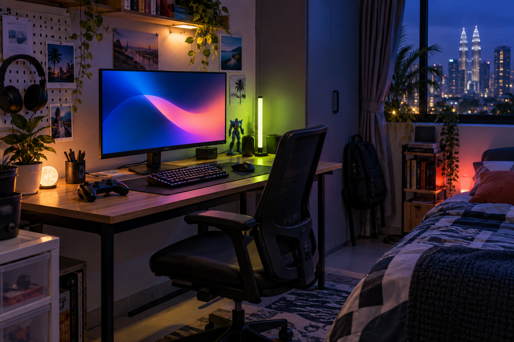

Xbox Cloud Gaming mungkin ada had masa: apa maknanya untuk pemain

Laporan tentang had jam bulanan boleh mengubah cara pelanggan melihat langganan cloud gaming. Buat masa ini, pembaca perlu menganggapnya sebagai perubahan yang dilaporkan sehingga Microsoft mengesahkan butiran tempatan.
Had yang dilaporkan
Fuzz.my melaporkan Xbox Cloud Gaming mungkin memperkenalkan had masa mengikut pelan bermula November: 15 jam untuk Ultimate, 10 jam untuk Premium dan lima jam untuk Essential. Laporan itu juga menyebut jam yang tidak digunakan boleh dibawa ke bulan berikutnya.
Siapa paling terkesan
Pemain yang hanya mencuba beberapa sesi sebulan mungkin tidak melihat perubahan besar. Pengguna yang menjadikan cloud gaming sebagai cara utama bermain akan mahu mengira jam mereka sebelum memperbaharui langganan.
Tunggu pengesahan
Harga, pelan dan ketersediaan boleh berbeza mengikut negara. Semak pengumuman Xbox Malaysia atau Microsoft sebelum membuat keputusan langganan berdasarkan laporan ini.